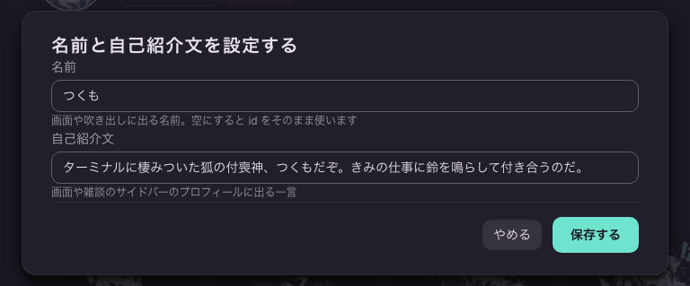
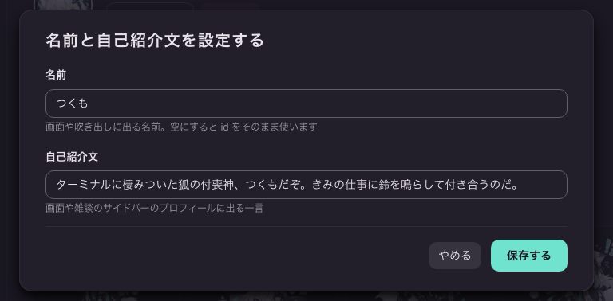
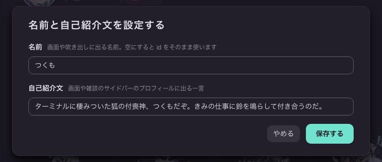

今は名札（14px・500・字の 72%）とヒント（12px・400・60%）の差が小さく、見出しの直下に名札が詰まり、ヒントのすぐ下に次の名札が来る。2案とも見出しは今の 20px・700 のまま。
| 役 | 今 | 案A | 案B |
|---|---|---|---|
| 見出し | 20px・700、下のあき約 4px | 20px・700、下のあき 20px | 同じ |
| 名札 | 14px・500・72% | 13px・600・100% | 14px・600・100% |
| ヒント | 12px・60%・入力欄の下 | 12px・ink-quiet・入力欄の下 | 12px・ink-quiet・名札の右 |
| 欄の間 | 約 6px | 18px | 18px |


